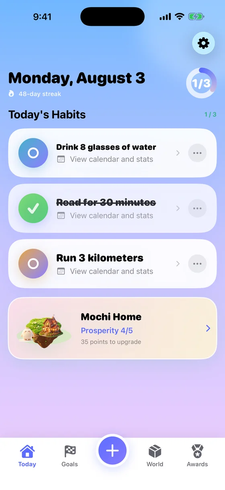

Check off repeating habits
Set a habit to repeat daily, on selected weekdays or every few days. Review streaks and recent check-ins.
iPhone & iPad · iOS 17 or later
Check off recurring habits, break longer goals into steps, and see each bit of progress bring Mochi’s world to life.
Free · No ads or in-app purchases · Your records stay on-device

Use a recurring habit for things you want to keep doing and a goal expedition for a target you can finish.
Set a habit to repeat daily, on selected weekdays or every few days. Review streaks and recent check-ins.
Set a deadline and target count. Record one step at a time and see how far you still have to go.
Daily check-ins help Mochi grow and goals unlock places in its world. Local reminders and Live Activities help you see what’s next.
Use an expedition for a goal like reading twelve books by the end of the year. Pick a target and deadline, then log each finished book.

Yes. You can repeat a habit daily, on weekdays you choose, or at a set interval of days.
On compatible devices, Live Activities show today’s progress on the Lock Screen and Dynamic Island.
No. The app keeps tasks and progress on your device and has no ads or in-app purchases.